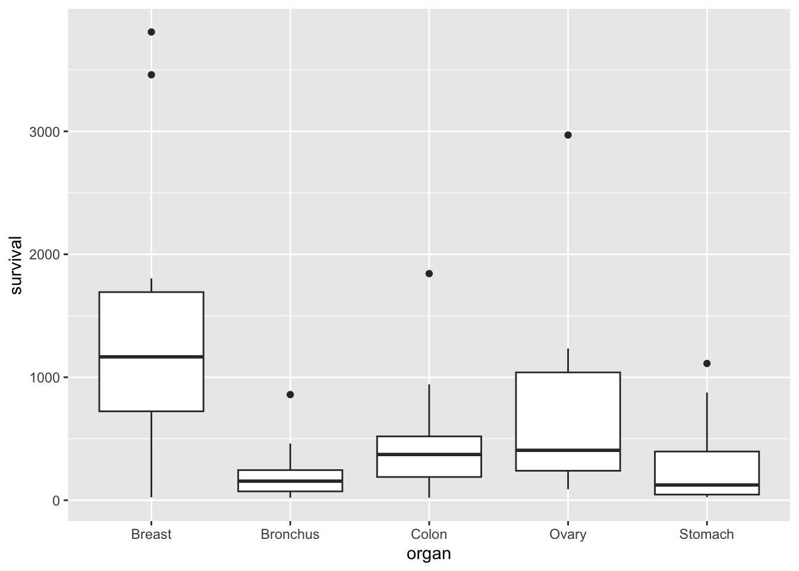

This chapter is mostly taken from Chapters 10 and 11 in the MAS5052 notes, but with fitting models left out until the next Chapter. If you are already familiar with one-way ANOVA models of the form \[
Y_{ij} = \mu + \tau_i+\varepsilon_{ij},
\] (with appropriate constraints) and ANCOVA models of the form \[
Y_{ij} = \mu + \tau_i+\beta_ix_{ij}+\varepsilon_{ij},
\]
then you should be able to skip over this chapter quickly.
3.1 Example: cancer survival data
The file cancer.csv has data from patients with advanced cancers of the stomach, bronchus, colon, ovary or breast were treated with ascorbate. We suppose that this aim is to determine if patient survival differs with respect to the organ affected by the cancer. The survival time in days was recorded for each patient.
We can use a box plot to compare the survival times for each type (organ) of cancer patient:
ggplot(cancer, aes(x = organ, y = survival)) +geom_boxplot()

We suppose that the survival time is the dependent variable of interest, which we can treat as continuous as before. But our independent variable, organ, is qualitative. Can we still use a linear model to analyse these data?
3.2 A linear model for the cancer data
Clearly, it would not make sense to write a model such as \[
Y_i=\beta_0 + \beta_1 x_i +\varepsilon_i,
\] where \(Y_i\) is the survival time of the \(i\)-th patient and \(x_i\) is the cancer type of the \(i\)-th patient, because the independent variable (cancer type) is a categorical variable (i.e. it doesn’t make sense to say “survival time \(= 50 +3\times\) stomach cancer”). We could write our model as \[
Y_i= \beta_1 x_{i,1} + \beta_2 x_{i,2}+\beta_3 x_{i,3}+\beta_4 x_{i,4}+\beta_5 x_{i,5} +\varepsilon_i,
\] where \(x_{i,j} = 1\) if patient had cancer type \(j\) (\(j=1\) for Breast, \(j=2\) for Bronchus and so on) and \(x_{i,j} = 0\) otherwise. We say that \(x_{i,j}\) is a dummy variable. The five dummy variables here ensure that the correct \(\beta\) term is selected for each observation. This notation can be a little cumbersome, so we typically write these sorts of models in a different way.
3.3 Notation for qualitative independent variables
Each observation is associated with a particular group, where the group is specified by the value (level) of the qualitative independent variable. The organ variable can be one of five possibilities, so we think the data as being organised in five groups.
We write \(Y_{ij}\) as the \(j\)-th observation within group \(i\). Let \(g\) be the total number of groups (with \(g=5\) in the cancer data). We then have \(i=1,\ldots,g\).
Note
Whereas a quantitative independent variable is typically represented by its own letter (e.g. \(x_i\)), we typically represent a qualitative independent variable using an additional subscript on the dependent variable.
Within group \(i\) we let \(n_i\) be the total number of observations, so that we have \(j=1,\ldots,n_i\). In the cancer data, if we call the group of patients with breast cancer group 1, there are 11 patients in this group, so \(n_1=11\), and the 11 survival times for patients with stomach cancer are denoted \(Y_{1,1},Y_{1,2},\ldots,Y_{1,11}\). As usual, we think of \(Y_{ij}\) as a random variable, and \(y_{ij}\) as the observed value of that random variable.
We let \(n\) denote the total number of observations, so that \(n=\sum_{i=1}^g n_i\).
Now let \(\mu_i\) denote the population mean of the dependent variable in group \(i\). We can now write a model for the data as follows: \[
Y_{ij}=\mu_i + \varepsilon_{ij},
\] for \(i=1,\ldots,g\), \(j=1,\ldots,n_i\) and \(\varepsilon_{ij}\sim N(0,\sigma^2)\).
Note
Analysis of data using this model is sometimes referred to as one-way analysis of variance (ANOVA), and we will refer to the above model as the one-way ANOVA model.
3.5 Least squares estimates for the one-way ANOVA model
Now that we have written the model in matrix notation, we can immediately obtain least squares estimates for the unknown group means \(\mu_1,\ldots,\mu_g\), using the formula \(\hat{\boldsymbol{\beta}}=(X^TX)^{-1}X^T\mathbf{y}\). Since \[
(X^TX)^{-1}=\left(\begin{array}{cccc}n_1 & 0 & \ldots & 0 \\ 0 &
n_2 & \ldots & 0 \\ \vdots & & \ddots & \vdots \\ 0 & 0 & \ldots
& n_g \end{array} \right)^{-1},\quad
X^T\mathbf{y}=\left(\begin{array}{c} \sum_{j=1}^{n_1} y_{1,j} \\ \vdots \\
\sum_{j=1}^{n_g} y_{g,j} \end{array}\right)
\] we have \[
\hat{\boldsymbol{\beta}}=\left(\begin{array}{c}\hat{\mu}_1 \\ \vdots \\ \hat{\mu}_g \end{array}\right) = \left(\begin{array}{c} \frac{1}{n_1} \sum_{j=1}^{n_1} y_{1,j} \\ \vdots \\
\frac{1}{n_g} \sum_{j=1}^{n_g} y_{g,j} \end{array}\right)
\] This result is intuitive. For example, in group 1 we have \(n_1\) observations \(y_{1,1},\ldots,y_{1,n_1}\), all with expected value \(\mu_1\). The obvious estimate for \(\mu_1\) is the sample mean \(\frac{1}{n_1} \sum_{j=1}^{n_1} y_{1,j}\).
3.6 An alternative parameterisation
An alternative way of writing the one-way ANOVA model is as follows: \[
Y_{i,j}=\mu + \tau_i + \varepsilon_{i,j},
\] for \(i=1,\ldots,g\), \(j=1,\ldots,n_i\) and with \(\varepsilon_{i,j}\sim N(0,\sigma^2)\).
This parameterisation is usually more convenient when it comes to investigating differences between groups, as we shall see later.
The intention of this parametrisation could be to think of \(\mu\) as the grand mean, and \(\tau_i\) as the difference between the mean of group \(i\) and the grand mean \(\mu\). However, this model is over-parametrised.
In matrix notation, we would write this as \[
\mathbf{Y} = X\boldsymbol{\beta} + \boldsymbol{\varepsilon},
\] with \[
\mathbf{Y}=\left(\begin{array}{c}Y_{1,1} \\ \vdots \\ Y_{1,n_1} \\ Y_{2,1}\\
\vdots \\ Y_{2,n_2} \\ \vdots \\ Y_{g,1} \\
\vdots
\\ Y_{g,n_g}\end{array}\right),\quad
X=\left(\begin{array}{cccccc}1&1& 0 & 0 & \ldots & 0 \\ \vdots & \vdots & \vdots & \vdots & & \vdots \\
1& 1& 0 & 0 & \ldots & 0 \\ 1 & 0& 1 & 0 & \ldots & 0 \\ \vdots & \vdots & \vdots & \vdots & & \vdots \\
1 & 0& 1 & 0 & \ldots & 0 \\ \vdots & \vdots & \vdots & \vdots & & \vdots \\ 1 & 0& 0 & 0 & \ldots & 1 \\ \vdots & \vdots & \vdots & \vdots & & \vdots \\
1 & 0& 0 & 0 & \ldots & 1
\end{array}\right),\quad
\boldsymbol{\beta}=\left(\begin{array}{c}\mu \\\tau_1 \\ \vdots \\
\tau_g\end{array}\right),\quad
\boldsymbol{\varepsilon}=\left(\begin{array}{c}\varepsilon{1,1} \\ \vdots \\ \varepsilon{1,n_1} \\ \varepsilon{2,1}\\
\vdots \\ \varepsilon{2,n_2} \\ \vdots \\ \varepsilon{g,1} \\
\vdots
\\ \varepsilon{g,n_g}\end{array}\right).
\] For this particular design matrix \(X\), we find that \[
X^TX=\left(\begin{array}{ccccc}n & n_1 & n_2 & \cdots & n_g
\\ n_1 & n_1 & 0 & \cdots & 0\\ n_2 & 0 & n_2 & \cdots & 0 \\ \vdots & \vdots &\vdots & \ddots & \vdots \\ n_g & 0 & 0 & \cdots &
n_g
\end{array}\right).
\] The matrix \(X^TX\) cannot be inverted, as \(\det(X^TX)=0\) (the first column is the sum of columns 2 to \(g+1\), noting that \(\sum_{i=1}^g n_i=n\)). Hence it is not possible to obtain least squares parameter estimates for this model, as we cannot evaluate the expression \(\boldsymbol{\beta}=(X^TX)^{-1}X^T\mathbf{y}\). Intuitively, this makes sense as we are trying to estimate \(g+1\) parameters representing group means (\(\mu\) and \(\tau_1,\ldots,\tau_g\)) with data from only \(g\) groups.
The solution is to apply constraints to the parameters. One possibility is to state that \(\tau_1=0\), so that the model can be written as \[
Y_{i,j}=\left\{\begin{array}{ll}\mu + \varepsilon_{1,j} & \mbox{$i=1$,
$j=1,\ldots n_1$}\\ \mu + \tau_i + \varepsilon_{i,j} & \mbox{$i=2,\ldots,g$,
$j=1,\ldots n_i$} \end{array}\right.
\] For this parametrisation, \(\mu\) is interpreted as the (population) mean for group 1, and \(\tau_i\) gives the difference in means between group \(i\) and group 1, for \(i\neq 1\).
This model is written in matrix form as \[
\mathbf{Y} = X\boldsymbol{\beta} + \boldsymbol{\varepsilon},
\] with \[
\mathbf{Y}=\left(\begin{array}{c}Y_{1,1} \\ \vdots \\ Y_{1,n_1} \\ Y_{2,1}\\
\vdots \\ Y_{2,n_2} \\ \vdots \\ Y_{g,1} \\
\vdots
\\ Y_{g,n_g}\end{array}\right),\quad
X=\left(\begin{array}{ccccc}1& 0 & 0 & \ldots & 0 \\ \vdots & \vdots & \vdots & & \vdots \\
1& 0 & 0 & \ldots & 0 \\ 1& 1 & 0 & \ldots & 0 \\ \vdots & \vdots & \vdots & & \vdots \\
1& 1 & 0 & \ldots & 0
\\ \vdots & \vdots & \vdots & & \vdots \\ 1& 0 & 0 & \ldots & 1 \\ \vdots & \vdots & \vdots & & \vdots \\
1& 0 & 0 & \ldots & 1
\end{array}\right),\quad
\boldsymbol{\beta}=\left(\begin{array}{c}\mu \\ \tau_2 \\ \vdots \\
\tau_g\end{array}\right),\quad
\boldsymbol{\varepsilon}=\left(\begin{array}{c}\varepsilon{1,1} \\ \vdots \\ \varepsilon{1,n_1} \\ \varepsilon{2,1}\\
\vdots \\ \varepsilon{2,n_2} \\ \vdots \\ \varepsilon{g,1} \\
\vdots
\\ \varepsilon{g,n_g}\end{array}\right).
\] For this design matrix we find that \[
\hat{\boldsymbol{\beta}}=\left(\begin{array}{c}\frac{1}{n_1}\sum_{j=1}^{n_1} y_{1,j} \\
\frac{1}{n_2}\sum_{j=1}^{n_2} y_{2,j} -
\frac{1}{n_1}\sum_{j=1}^{n_1} y_{1,j} \\ \vdots \\
\frac{1}{n_g}\sum_{j=1}^{n_g} y_{g,j} -
\frac{1}{n_1}\sum_{j=1}^{n_1} y_{1,j}
\end{array}\right),
\] (details omitted), hence \(\hat{\mu}\) is the sample mean of the observations in group 1, and \(\hat{\tau}_i\) is the difference between the sample means of groups \(i\) and 1.
3.7 ANCOVA and models with interactions
ANCOVA (Analysis of Covariance) involves regression modelling where the regression line changes between different groups in the data (with groups defined by the values of a qualitative/factor variable.)
For a simple example, we’ll use the built in dataset mtcars (see ?mtcars for details)
\[
Y_{ij} = \mu + \tau_i + \beta_i x_{ij} + \varepsilon_{ij}
\] where \(Y_{ij}\) is the fuel economy mpg of the \(j\)th car in group \(i\), and \(x_{ij}\) is the corresponding weight wt, for \(i=1,2\). Group \(i=1\) corresponds to automatic cars, and \(i=2\) corresponds to manual cars. We include the constraint \(\tau_1 = 0\). So the regression line for automatic cars would be \[
y = \mu + \beta_1x,
\] and for manual cars would be \[
y = \mu +\tau_2+ \beta_2x.
\] The effect of weight on fuel economy (the ‘beta’ parameter) changes depending on whether the car is a manual or automatic: there is an interaction between transmission and weight in affecting the fuel economy.
asbestos - has the individual been exposed to asbestos (1=exposed, 0=unexposed)
home - place of residence (1=England, 2=Scotland, 3=Wales, 4=Northern Ireland)
smoke - have they ever smoked (1=yes, 0=no)
asthma - do they have asthma (1=yes, 0=no)
Try writing down models with appropriate notation to represent the following, with vol the dependent variable in each case. Specify parameter constraints as needed.
There is one independent variable only: smoke .
There are two independent variables only: smoke and exer. There is a linear relationship between exer and vol, but the relationship changes depending on whether the individual is a smoker or not.
There are three independent variables only: smoke, exer and asthma. There is a linear relationship between exer and vol, but the relationship changes depending on the combination of the individual’s smoking and asthma status. Hint: you need one subscript per qualitative independent variable, and one further subscript to distinguish between individuals in the same group, with group specified by the combination of qualitative independent variables.
Solution
Our model is \[
Y_{ij} = \mu + \tau_i + \varepsilon_{ij},
\] where
\(Y_{ij}\) is the observed volume of air expelled for individual \(j\) in group \(i\), with group defined by smoking status;
\(i=1\) if the individual is a smoker, \(i=2\) otherwise,
we have \(j=1,\ldots,n_i\) (there may be different numbers of individuals per group);
we constrain \(\tau_1=0\).
Our model is \[
Y_{ij} = \mu + \tau_i + \beta_ix_{ij} + \varepsilon_{ij},
\]
\(Y_{ij}\) is the observed volume of air expelled for individual \(j\) in group \(i\), with group defined by smoking status;
\(x_{ij}\) the corresponding number of hours of exercise per month;
\(i=1\) if the individual is a smoker, \(i=2\) otherwise,
we have \(j=1,\ldots,n_i\);
we constrain \(\tau_1=0\).
We have two qualitative variables (smoking and asthma), so we use two subscripts (\(i\) and \(j\)) to define a group. Our model is
\(Y_{ijk}\) is the observed volume of air expelled for individual \(k\) in group \(ij\), with group defined by the combination of smoking and asthma status;
\(x_{ijk}\) the corresponding number of hours of exercise per month;
\(i=1\) if the individual is a smoker, \(i=2\) otherwise,
\(j=1\) if the individual has asthma and \(j=2\) otherwise,
we have \(k=1,\ldots,n_{ij}\);
we constrain \(\tau_{11}=0\).
An alternative model (for the intercept) is
\[
Y_{ijk} = \mu + \alpha_i+\gamma_j+\tau_{ij} + \beta_{ij}x_{ijk} + \varepsilon_{ijk},
\] now with constraints \(\alpha_1=\beta_1=\tau_{1j}=\tau_{i1}=0\). If we were to remove the exercise variable from this model, we would be left with the “two-way analysis of variance model”: \[
Y_{ijk} = \mu + \alpha_i+\gamma_j+\tau_{ij} + \varepsilon_{ijk},
\] which can be used to investigate whether the effects of two factors (smoking and asthma here) are additive or interact, as \(\tau_{ij}\) represents an interaction effect here.